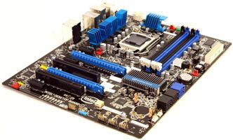
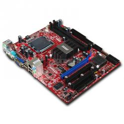
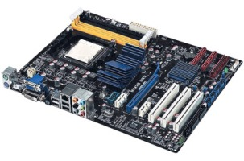

Как правильно выбрать материнскую плату.
Выбор комплектующих компьютера, чаще всего, начинают с выбора материнской платы и процессора. Ведь это основа любого компьютера.
В этой статье Вы узнаете, как выбрать материнскую плату для Вашего будущего компьютера.
Материнская плата так называется, потому что является основой, на которую устанавливаются остальные платы, также называемые
дочерними. Поэтому к ее выбору следует подойти внимательно.
Почему так важно тщательно выбрать мат. плату? Потому, что от этого выбора зависит, какой тип процессора Вы сможете установить,
какой объем оперативной памяти сможете установить, а также какого типа оперативная память будет. Также от выбора платы
зависит количество дополнительных устройств подключаемых к компьютеру.
Каждая материнская плата состоит из следующих частей - разъем для центрального процессора, слоты для оперативной памяти, чипсет, слот для видеокарты и слоты для установки дополнительных устройств (например, сетевая карта),
различные разъемы для подключения жестких дисков, CD/DVD - приводов, клавиатуры, мыши, принтера, сканера и прочего.
При выборе следует ориентироваться на следующие критерии - производитель (бренд), поддерживаемые процессоры, чипсет, тип оперативной памяти, а также на те дополнительные функции, которые нужны именно Вам.
От выбора производителя зависит стабильность ее работы. Потому, что, как правило, у известных
производителей качество выше, чем у тех производителей, о которых Вы вообще не слышали. Но нужно остерегаться подделок.
К известным производителям материнских плат можно отнести следующие - Intel, MSI, Gigabyte, ASUS, DFI и другие.



Выбирая основную плату нужно не забыть о типе устанавливаемого в нее процессора. Убедитесь,
что Ваш процессор подходит для данной материнской платы. Подобрать все конфигурацию можно через страницу
собрать компьютер онлайн.
Чипсет определяет функциональные возможности материнской платы. Чипсет состоит из, так называемых, северного и южного моста, это специальные микросхемы, которые служат для связи разных интерфейсов и шин. На северном мосте устанавливают радиатор, благодаря чему его легко найти. Радиатор установлен на северном мосте по той причине, что он взаимодействует
с более быстрыми компонентами, чем южный, поэтому сильнее нагревается.
Также обратите внимание на тип поддерживаемой оперативной памяти.
Когда Вы будете выбирать себе материнскую плату, также не забудьте о дополнительных ее возможностях, которые, возможно, Вам понадобятся. Это могут быть,
как интегрированные аудио- и видео- карты, так и количество слотов для установки дочерних карт и другого.
Читайте также:
Почему Intel лучше, чем AMD?
Системы охлаждения.
Следующая статья:
Компьютерный моддинг и все его положительные стороны.